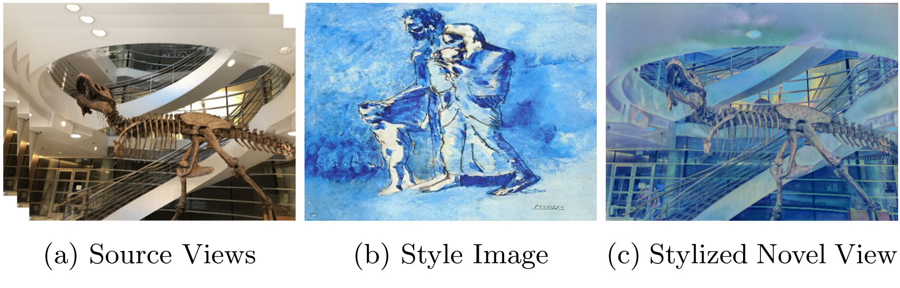
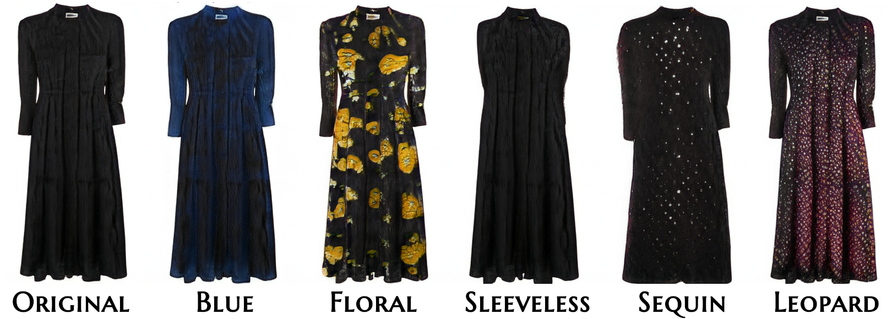
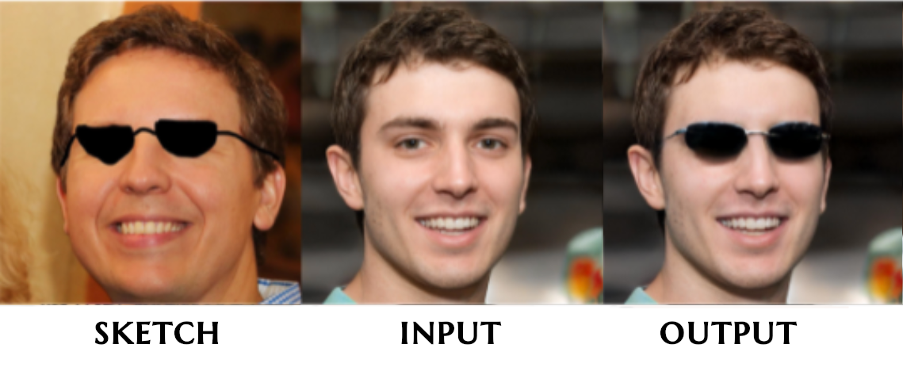
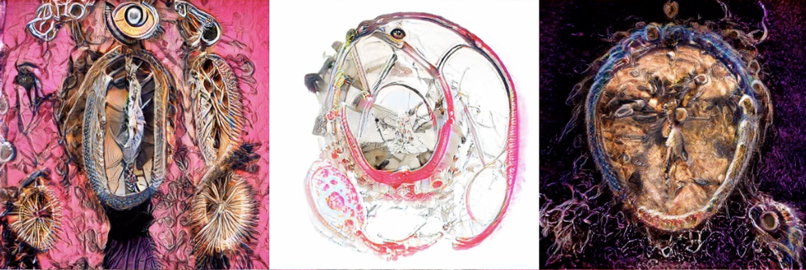

Publications.
Selected papers below; see Google Scholar for the complete list.
-
Face Anything: 4D Face Reconstruction from Any Image Sequence
A transformer-based, single-feed-forward model that jointly predicts depth and canonical facial coordinates, enabling temporally consistent 4D reconstruction and dense tracking of arbitrary image sequences without per-frame optimization. The canonical-coordinate representation reframes tracking as a coordinate-prediction problem, so dense correspondences fall out from a single nearest-neighbor lookup in canonical space. The method achieves ~3× lower correspondence error than prior dynamic reconstruction methods (V-DPM, Pixel3DMM) and 16% better depth than face-specific baselines (DAViD, Sapiens) on NeRSemble and VFHQ.
-

G3DST: Generalizing 3D Style Transfer with Neural Radiance Fields across Scenes and Styles
Existing NeRF-based 3D style transfer methods need extensive per-scene or per-style optimization, which limits how broadly they can be applied. G3DST renders stylized novel views from a generalizable NeRF without any test-time fitting, sharing a single learned model across scenes and styles via a hypernetwork. We additionally introduce a flow-based multi-view consistency loss that keeps stylization stable as the camera moves. Visual quality matches per-scene methods while being dramatically faster and more broadly applicable.
-

Fantastic Style Channels and Where to Find Them: A Submodular Framework for Discovering Diverse Directions in GANs
Existing approaches to discovering interpretable editing directions in StyleGAN2 (supervised, unsupervised, or manual) typically surface only a handful of usable directions. We design a submodular framework that selects the most representative and diverse subset of directions inside StyleGAN2's channel-wise style space, clustering channels that perform similar manipulations into groups. Diversity is encoded directly through cluster structure and the whole problem is solved efficiently with a greedy scheme. Quantitative and qualitative experiments show the method finds more diverse and disentangled directions than prior work.
-

StyleMC: Multi-Channel Based Fast Text-Guided Image Generation and Manipulation
Discovering meaningful directions in GAN latent spaces usually requires either large labeled datasets or hours of preprocessing per manipulation. StyleMC is a fast text-driven image manipulation method that combines a CLIP-based loss with an identity-preservation loss to find stable global directions in StyleGAN2, taking only a few seconds of training per text prompt. There is no need for prompt engineering or per-prompt tuning, and the approach drops into any pretrained StyleGAN2 model. We outperform slower CLIP-based baselines while leaving non-target attributes intact.
-

Rank in Style: A Ranking-based Approach to Find Interpretable Directions
Recent CLIP-based StyleGAN editing methods such as StyleCLIP work well, but their success often hinges on careful manual prompt engineering. We propose an automatic ranking-based approach that scores candidate text-driven directions by combining two metrics: relevance (CLIP-space similarity to a target keyword) and editability (the magnitude of induced change). Given a pretrained StyleGAN model and a list of keywords, the framework outputs optimized prompts that reliably produce semantic edits without hand-tuning. Human evaluation finds it more semantically meaningful and disentangled than unsupervised baselines like SeFa and GANSpace.
-

PaintInStyle: One-Shot Discovery of Interpretable Directions by Painting
Most methods for discovering interpretable directions in GAN latent spaces require many labeled samples, classifiers, or careful annotation. PaintInStyle finds a reusable manipulation direction from a single painted edit, for example sketching a beard or painting red lipstick on one image. The method inverts both the original and edited image, isolates channels that affect only the painted region using segmentation, and averages across random samples to reduce noise. The result is a one-shot, annotation-free pipeline for directions that generalize to any image.
-

Exploring Latent Dimensions of Crowd-sourced Creativity
Most prior work on interpretable GAN directions targets concrete semantic attributes (age, gender, expression, and so on). We instead study a more abstract property: creativity. Can an image be steered to look more or less creative? Building on Artbreeder, the largest crowd-sourced AI image platform, we explore the latent dimensions of images generated there and present a framework for manipulating creativity as a direction in latent space.